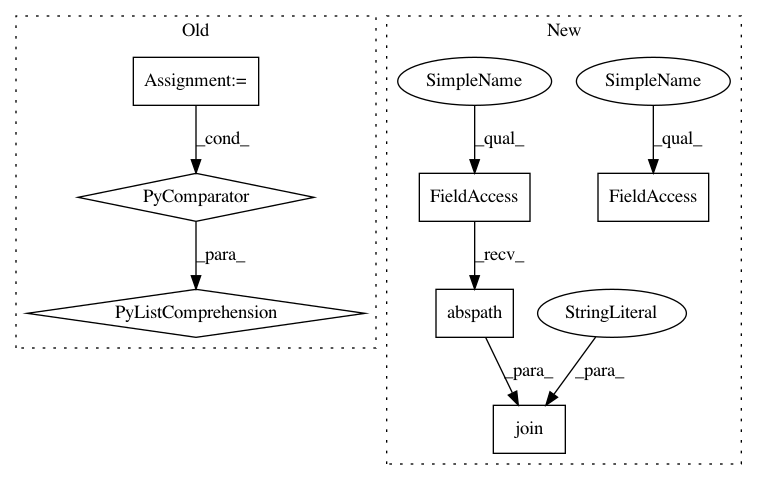

58cb5e6c44bb9f3f85de74c85584e926b5954610,setup.py,,,#,7
Before Change
from Cython.Distutils import build_ext as _build_ext
list_pyx = ["cydtw", "cygak", "cysax", "cycc", "soft_dtw_fast"]
ext = [Extension("tslearn.%s" % s, ["tslearn/%s.pyx" % s], include_dirs=[numpy.get_include()]) for s in list_pyx]
setup(
name="tslearn",
description="A machine learning toolkit dedicated to time-series data",
After Change
// If something messes up, let the build process fail noisy, BEFORE my release!
// thanks Pipy for handling markdown now
ROOT = os.path.abspath(os.path.dirname(__file__))
with open(os.path.join(ROOT, "README.md"), encoding="utf-8") as f:
README = f.read()
setup(
In pattern: SUPERPATTERN
Frequency: 3
Non-data size: 7
Instances
Project Name: rtavenar/tslearn
Commit Name: 58cb5e6c44bb9f3f85de74c85584e926b5954610
Time: 2019-06-28
Author: romain.tavenard@univ-rennes2.fr
File Name: setup.py
Class Name:
Method Name:
Project Name: scipy/scipy
Commit Name: 72dc1d632e5adafb1867d3623c0f71613b55153d
Time: 2013-08-21
Author: ralf.gommers@googlemail.com
File Name: scipy/linalg/setup.py
Class Name:
Method Name: configuration
Project Name: rtavenar/tslearn
Commit Name: 58cb5e6c44bb9f3f85de74c85584e926b5954610
Time: 2019-06-28
Author: romain.tavenard@univ-rennes2.fr
File Name: setup.py
Class Name:
Method Name:
Project Name: Esri/raster-functions
Commit Name: 164b392ce45a1baa7523212c451fa3d20cb06450
Time: 2015-05-21
Author: akferoz@esri.com
File Name: setup.py
Class Name:
Method Name: main